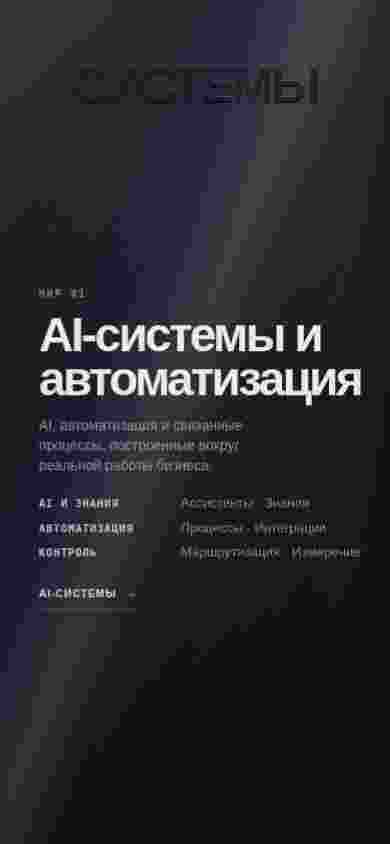
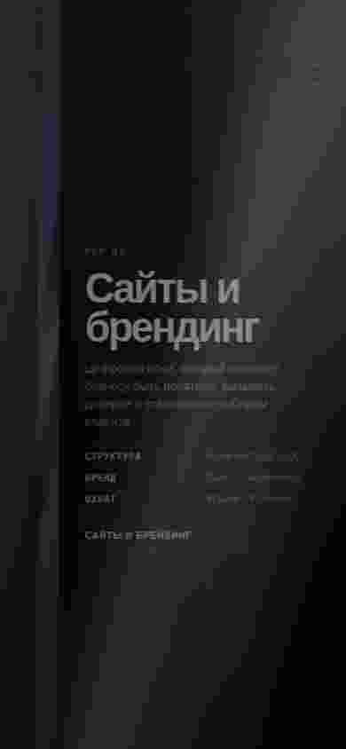
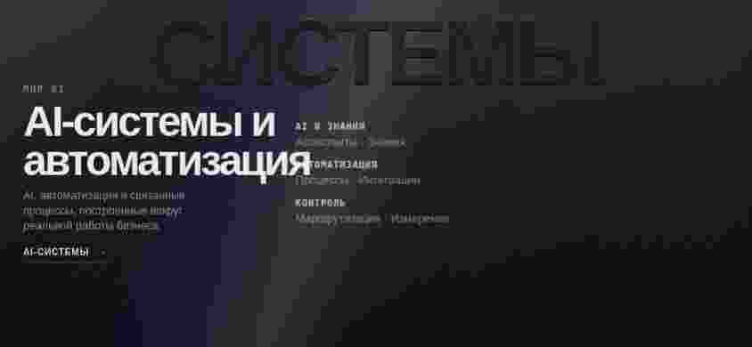
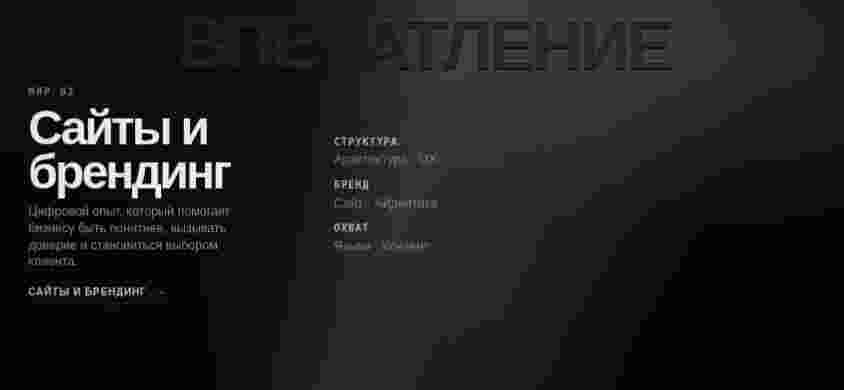

PROAI EXPERT / TWO WORLDS / BIMETAL FOLD R2.5
Clean motion recovery.
Authoritative single-layer runtime. Real controlled Chromium captures, browser zoom 100%, deviceScaleFactor 1. Portrait sequence proves: text releases → pure material turns → text arrives.
LAPTOP
01 — Neutral 50/50
1440 × 900
02 — AI Active
1440 × 900 · SETTLED
03 — Web Active
1440 × 900 · SETTLED
PORTRAIT — THE TURN
04 — AI Settled
390 × 844
05 — AI Content Release
390 × 844
06 — Pure Material Turn
390 × 844 · NO READABLE TEXT
07 — Web Content Arrival
390 × 844
08 — Web Settled
390 × 844
LANDSCAPE
09 — AI
844 × 390
10 — Web
844 × 390